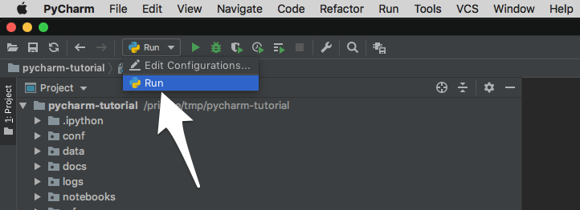

Set up PyCharm
This section will present a quick guide on how to configure PyCharm as a development environment for working on Kedro projects.
Open a new project directory in PyCharm. You will need to add your Project Interpreter, so go to PyCharm | Preferences for macOS or File | Settings for Windows and Linux:

Choose Project Interpreter:

Click the cog on the right-hand side and click Add:

Select Conda Environment:

Choose Existing environment and navigate your way to find your existing environment. If you don't see your conda environment in the dropdown menu then you need to open a terminal / command prompt with your conda environment activated and run:
# macOS / Linux
which python
# Windows
python -c "import sys; print(sys.executable)"
Paste the interpreter path into the file picker and click OK:

Finally, in the Project Explorer right-click on src and then go to Mark Directory as | Sources Root:

Set up Run configurations
PyCharm Run configurations allow you to execute preconfigured scripts rapidly in your IDE with a click of a button. This may be useful for testing, running and packaging your Kedro projects.
Here we will walk you through an example of how to set up Run configuration for the Kedro CLI run command. It is also applicable to other Kedro commands, such as test or install.
Go to Run | Edit Configurations:

Add a new Python Run configuration:

Specify the Run / Debug Configuration name in the Name field, and edit the new Run configuration as follows:
- Pick Module from the dropdown
- Enter
kedroin the Module Name field - Enter
runin the Parameters field - Enter the path of your project directory into the Working directory field
- Pick
Emulate terminal in output consolefrom the Modify options dropdown, and then click OK

**Emulate terminal in output console** enables PyCharm to show [rich terminal output](../logging/index.md).
To execute the Run configuration, select it from the Run / Debug Configurations dropdown in the toolbar (if that toolbar is not visible, you can enable it by going to View > Toolbar). Click the green triangle:

You may also select Run from the toolbar and execute from there.

For other kedro commands, follow same steps but replace run in the Parameters field with the other commands that are to be used (e.g., jupyter, package, registry etc.).
Debugging
To debug, simply click the line number in the source where you want execution to break:

Then click the bug button in the toolbar ( ) and execution should stop at the breakpoint:
) and execution should stop at the breakpoint:

For more information about debugging with PyCharm take a look at the debugging guide on jetbrains.com.
Advanced: Remote SSH interpreter
This section uses features supported in PyCharm Professional Edition only.
Firstly, add an SSH interpreter. Go to Preferences | Project Interpreter as above and proceed to add a new interpreter. Select SSH Interpreter and fill in details of the remote computer:

Click Next and add the SSH password or SSH private key:

Click Next and add the path of the remote interpreter. Assuming a Unix-like OS, this can be found by running which python within the appropriate conda environment on the remote computer.

Click Finish. Go to Run / Debug Configurations to add a Remote Run. Select the remote interpreter that you have just created. For the script path, get the path of the Kedro CLI on the remote computer by running which kedro (macOS / Linux) in the appropriate environment.

Click OK and then select Remote Run from the toolbar and click Run to execute remotely.

To debug remotely, click the debugger button as described above.
Advanced: Docker interpreter
This section uses features supported by PyCharm Professional Edition only.
First, add a Docker interpreter. Go to Preferences | Project Interpreter as above and proceed to add a new interpreter. Select Docker Interpreter and then choose the target Docker image:

Click OK and check that the required packages appear:

Click OK and wait for PyCharm to index your new Python interpreter.
Click OK. Go to Run / Debug Configurations to add a Python Run. For the script path, get the path to the Kedro CLI on an instantiated image by running which kedro (macOS / Linux) in a container environment. Specify run as the parameter. Specify your working directory as the directory that contains your Kedro project on your local machine. Optional: Edit the Docker container volume mount setting if it does not match the directory that contains your Kedro project directory.

Click OK and then select your run configuration from the toolbar and click Run to execute.
To debug, click the debugger button as described above.
Configure Python Console
You can configure PyCharm's IPython to load Kedro's Extension.
Click PyCharm | Preferences for macOS or File | Settings, inside Build, Execution, Deployment and Console, enter the Python Console configuration.
You can append the configuration necessary to use Kedro IPython to the Starting script:
%load_ext kedro.ipython
With this configuration, when you create a Python Console you should be able to use context, session and catalog.

Configuring the Kedro catalog validation schema
You can enable the Kedro catalog validation schema in your PyCharm IDE to enable real-time validation, autocompletion and see information about the different fields in your catalog as you write it. To enable this, open a catalog.yml file and you should see "No JSON Schema" in the bottom right corner of your window. Click it and select "Edit Schema Mapping".

Add a new mapping using the "+" button in the top left of the window and select the name you want for it. Enter this URL https://raw.githubusercontent.com/kedro-org/kedro-plugins/main/kedro-datasets/static/jsonschema/kedro-catalog-0.19.json in the "Schema URL" field and select "JSON Schema Version 7" in the "Schema version" field.
Add the following file path pattern to the mapping: conf/**/*catalog*.

Different schemas for different Kedro versions can be found in the
kedro-datasetsrepository.